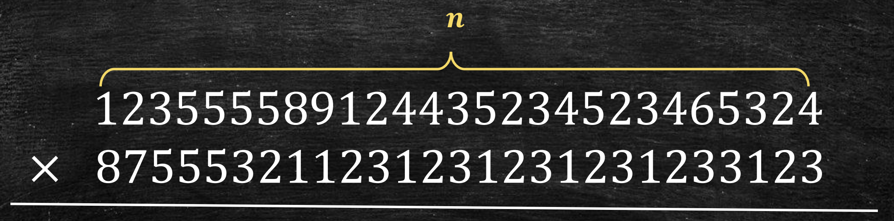
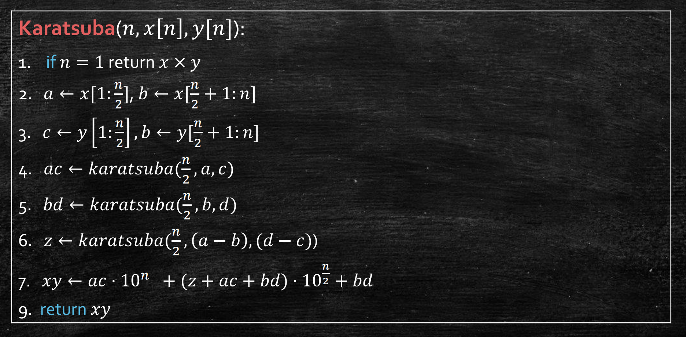
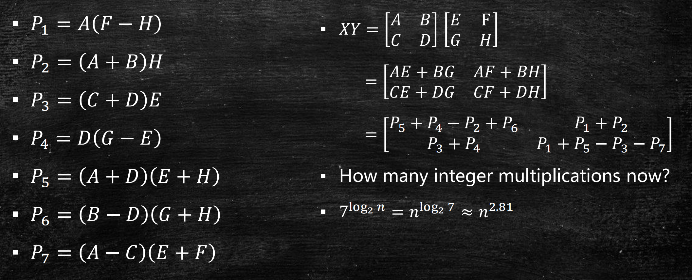
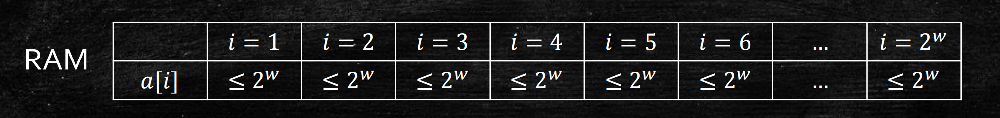

Last updated on May 5, 2025 pm
本文将以大整数乘法的Karatsuba算法为例，介绍分治算法（Divide and Conquer），并介绍时间复杂度分析的大O表示法。
算法（algorithm） 一词来自于9世纪波斯数学家al-Khwarizmi。因为他撰写了一本《印度计算书》，其开篇为"Dixit Algorismi"，意为“al-Khwarizmi如是说”，而这个词逐渐演化到了今天我们熟知的algorithm一词。
那就让我们从一种数学运算——整数乘法开始学习算法。
Karatsuba算法
当我们计算简单的乘法，如44×34时，用简单的竖式手算非常轻松（对于计算机更加轻松）。但当乘数的位数n不断增大，乘法的运算量也随之加大。那么有没有方法能减少大整数乘法中的运算量？
从大整数乘法开始

让我们先看看n位大整数乘法的运算量。如果我们以1位数的加法或乘法为一次运算，那么n位的大整数乘法需要多少次运算？由小学数学可知，大约有
- n2次1位数乘法
- n2次1位数加法（进位）
- n次2n位数加法
因此，我们总共要进行大约5n2次一位数运算，可以写作O(n2)。
注意，我们在这里用大O表示法省略了常数项，是因为我们只关心n很大的情况。
那么，我们是否有办法做得更好呢？
分治法的首次尝试
让我们尝试分治法！分治法，顾名思义，就是把原来的问题不断划分为规模更小的问题，直至最简单的情况。

算法设计
分治法的设计无非考虑两个问题：
- 怎么分（如何将原问题划分为更小的子问题）
- 怎么治（如何将子问题的解合并为原问题的解）
再这里，我们可以将乘数划分为高位和低位（怎么分），两两递归地计算乘积，再按权重相加（怎么治）。举个例子，我们用分治法计算1234×5678：
1234×5678==(12×100+34)×(56×100+78)(12×56)⋅10000+(12×78+34×56)⋅100+34×78
或者更一般地，
x×y==(a⋅102n+b)×(c⋅102n+d)ac⋅10n+(ad+bc)⋅102n+bd
这样，我们就把一个n位数乘法的问题，分解为了4个2n位数乘法的问题。而这4个子问题，将会按同样的方法继续递归调用，直到问题规模缩小到1位数乘法。
注意，我们在这里假定n是2的整数次幂。事实上，如果n不是2的整数幂，我们可以在高位补0。
算法分析
那么，我们的算法有没有比原来做得更好？也就是说，我们做了多少次1位数运算？在这里，我们用分治法中最经典的树形图进行分析。

这里，我们将每个大问题分出4个小问题，因此每一层的问题个数都是上一层的4倍。而由于我们每次能将问题规模缩小一半，即递归树的层数为log2n，最终一共会分出4log2n个基本问题，即递归树有4log2n个叶结点。
在分治法中，我们的时间代价主要有两方面：
- 分的代价：解决最终分出的所有最小规模的问题（即基本问题）
- 治的代价：每次将小问题的解合并为大问题的解
在树形图中，“分的代价”即指解决最下面一层叶结点的代价，“治的代价”即指下层叶结点合并到上层父节点的代价。
由于解决每个基本问题的需要完成1次1位数乘法，我们一共需要完成
4log2n⋅1=n2
次1位数乘法！也就是说，我们需要做超过n2次1位数运算！
显然，我们的朴素分治算法并没有让计算量变得更小。这似乎也是符合直觉的，因为我们只是把要计算的乘法交换了计算顺序，但基本计算的总量并没有变。以1234×5678为例，在几次递归之后，仍归结为每一位之间的两两相乘，即16个基本问题，并没有减少1位数运算的数量。
那么，有没有办法真正减少计算量呢？
Karatsuba算法
想要减少计算，我们必须看看我们是否做了冗余的计算，或者说有没有计算可以简化。
算法设计
前面已经推导过，
x×y=ac⋅10n+(ad+bc)⋅102n+bd
也就是说，为了求出xy，我们需要知道ac、ad+bc、bd。而我们刚才计算了哪些呢？ac、ad、bc、bd。换句话说，其实我们不需要知道ac和bd分别是多少，只需要知道ac+bd的值就够了。
那么有没有可能，可以不通过ad和bc来求得ac+bd的值呢？相信你已经想到了，我们可以在算出ac和bd之后，再算出
z=(a+b)(c+d)
进而用
ad+bc=(a+b)(c+d)−ac−bd=z−ac−bd
来求得ad+bc，也就是
x×y===(a⋅102n+b)×(c⋅102n+d)ac⋅10n+(ad+bc)⋅102n+bdac⋅10n+(z−ac−bd)⋅102n+bd
这就是Karatsuba算法。

原先要做4次乘法，现在只需要3次。利用Karatsuba算法，我们将一个n位数乘法问题，分解为了3个2n位乘法问题，也就是每层分出的子问题数比之前少了1个。那么，这是否带来了时间复杂度的降低呢？
算法分析
我们先计算要解决基本问题的数量，即进行了多少次1位数乘法。与刚才类似，我们不难得到递归树的层数为log2n，且每层的结点数为上一层的三倍，因此基本问题的数量（即叶结点个数）为
3log2n=nlog23≈n1.6
也就是说，我们只需要完成n1.6次1位数乘法！
可以验证，需要完成的1位数加法的数量也为O(n1.6)。
这样我们竟然得到了一个时间复杂度为O(n1.6)的整数乘法算法！
事实上，我们可以做得更好！比如利用快速傅立叶变化（FFT），我们可以将两个n位整数相乘的时间复杂度降低到O(nlogn)。这一技巧我们将在后续小节介绍。
拓展到矩阵乘法（Strassen算法）
这一分治法的思想可以应用到矩阵乘法中。设有两个n阶方阵X和Y，要计算Z=XY。按常规计算方法，我们需要计算Z中的n2个元素，每个元素要做n次乘法，因此时间复杂度为O(n3)。那么，我们可以用分治法做得更好吗？
不难想到，我们可以对X和Y分块。设
X=[ACBD],Y=[EGFH]
那么
Z=[ACBD][EGFH]=[AE+BGCE+DGAF+BHCF+DH]
这样，我们将一个规模为n的矩阵乘法，分解为了8个规模为2n的矩阵乘法。这能不能让计算次数减少呢？
相信你不会再次被骗，因为这和之前整数乘法中的朴素分治法很类似。事实上，我们仍需要做
8log2n=n3
次整数乘法，因此并不能降低运算量。
解决的思路也和之前类似。我们并不需要求出8个矩阵乘法的结果，只需要知道4个矩阵和即可，因此可以尝试将8次乘法减少为7次，从而让分解出的问题变少。
Strassen算法的具体计算不需要掌握，了解分治法的思想即可。

这个算法能让矩阵乘法的时间复杂度降低到O(n2.86)。
时间复杂度
为了定义时间复杂度，我们需要定义单位操作。例如，在整数乘法中，我们将1位数乘法定义为单位操作；在矩阵乘法中，我们将1次整数乘法定义为单位操作。那么在一般算法中，单位操作应该是什么呢？
计算模型
在这里，我们简单地介绍Word RAM 模型。我们设计算机的字长为w，那么可以认为内存中能存2w个长度为w的数（因为内存地址的位数也为w）。我们定义对一个字进行一次操作为一次单位操作。那么，我们在算法分析中应该取多大的w？

以排序算法为例，假设我们的输入为a1,a2,…,an。
- 地址空间限制：为了能存下所有的n个输入，我们要求n≤2w。
- 数据存储限制：为了能存下每一个输入的数字，我们要求ai≤2w。
但同时，我们不希望w过大，因为这可能导致某些操作被过度优化。比如在大整数乘法中，如果取w=n，那么其时间复杂度可以被认为是O(1)，这显然不符合我们的期望。
因此，我们通常取
w=O(max{logn,logai})
来确保时间复杂度的分析基于合理的字长假设。
大 O 表示法
为了了解一个算法的性能好坏，我们需要衡量一个算法的运行时间。那么如何衡量更加合理呢？
时间复杂度
我们知道，算法在一台计算机上的运行时间与算法本身、输入σ(n)的规模n有关，还与计算机处理器的性能有关。为了屏蔽处理器性能等因素对算法时间分析的影响，我们常用基本操作的数量来表征算法的运行时间t(σ(n))。
在算法分析中，我们常考虑最坏的输入情况，并定义时间复杂度
T(n)=σ(n)maxt(σ(n))
即在输入规模为n时需要的最多基本操作数量。
然而，单纯用T(n)来分析仍然有些复杂。例如，时间复杂度为T1(n)=5n2+3n+1 和 T2(n)=n2+2n+100 的两个算法哪个性能更好？我们需要对T(n)作进一步化简。
大 O 表示法
我们在前面已经使用过大O表示法，比如我们可以将T(n)=5n2+3n+1写作T(n)=O(n2)。这表示当n很大时，T(n)最多和n2同阶，或者用更严格的语言表述，即当n足够大时，存在常数C>0，使得T(n)≤Cn2。
注意，T(n)=O(n2)可以等于n2+100n+10000，可以等于1000n2+10n，也可以等于n+100，因为大O表示法只规定了时间复杂度的上界。
我们可以对大O表示法进行严格定义：
- 大O表示法：T(n)=O(g(n))的定义为
∃C,n0,s.t.∀n>n0,T(n)≤C⋅g(n)
- 大Ω表示法：T(n)=Ω(g(n))的定义为
∃C,n0,s.t.∀n>n0,T(n)≥C⋅g(n)
- 大Θ表示法：T(n)=Θ(g(n))的定义为
T(n)=O(g(n)) and T(n)=Ω(g(n))
可以看到，大O表示法刻画了T(n)的上界，大Ω表示法给出了T(n)的下界，而大Θ表示法给出了T(n)精确的阶，即T(n)与g(n)同阶。简单来说，一般我们对T(n)保留最高阶项即可得到大O表示法的g(n)。
其实，我们还有一种小o表示法：
- 小o表示法：T(n)=o(g(n))的定义为
∃C,n0,s.t.∀n>n0,T(n)<C⋅g(n)
- 小ω表示法：T(n)=ω(g(n))的定义为
∃C,n0,s.t.∀n>n0,T(n)>C⋅g(n)
不难发现，小o和小ω表示法分别给出了T(n)的严格上界和严格下界。
以Karatsuba算法为例
我们可以以Karatsuba算法为例，练习时间复杂度的分析。设输入为n位整数的Karatsuba算法的时间复杂度为T(n)，那么我们可以其伪代码出发，逐行分析其时间复杂度。

由此，可以得到T(n)的递推公式
T(n)=3T(2n)+O(n)
这里，我们尝试通过逐步展开的方式求出T(n)。
T(n)=======3T(2n)+O(n)32T(22n)+O(1.5n+n)33T(23n)+O(1.52n+1.5n+n)⋯3log2nT(1)+O(1.5log2n−1+⋯+1.52n+1.5n+n)nlog23⋅O(1)+O(nlog23)O(nlog23)
这和我们之前分析出的结果一致。